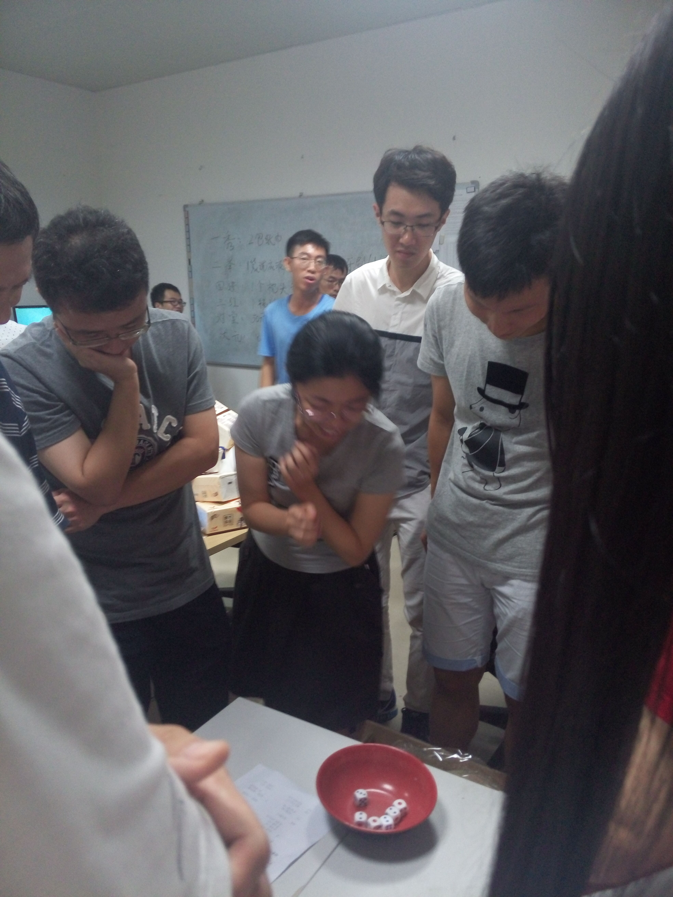
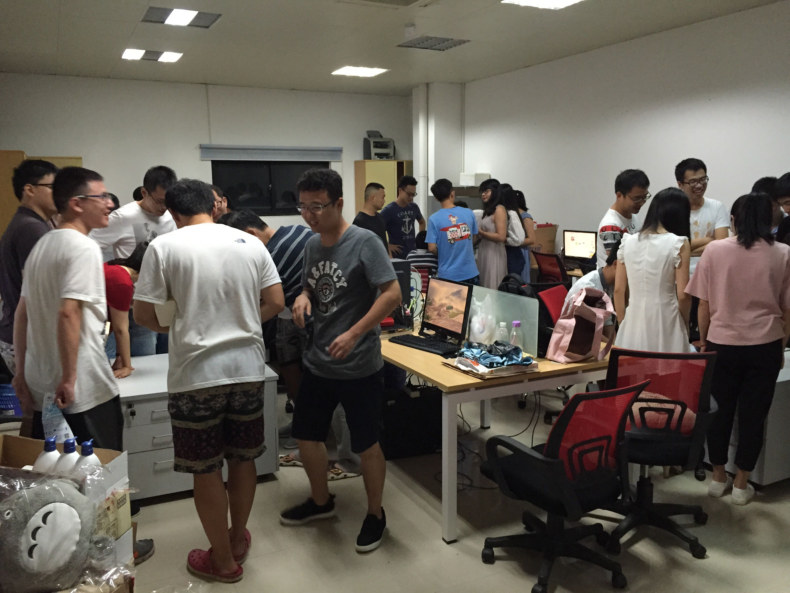

为了欢迎我们研一新生加入实验室，大家期盼已久的博饼活动终于在9月18日晚上举行了。 小编我是研一的新生，对我们实验室的博饼活动可是充满着憧憬，因为早早就看到学长学姐在实验室门口放了好几箱的奖品，桌子上也摆满了各种公仔。看到奖品如此丰厚，小编我也是摩拳擦掌想要博一个状元回来，无奈手气实在太差眼睁睁看着状元和对堂进入师兄师姐们的裤腰带。 虽说如此，我们还是玩得很开心的。经过不知多少轮的博饼， 最终分别被林炜、杜宝林学长和凌梅、王秋红学姐博得状元，杜宝林学长甚至博到了状元插金花！！！。

在福建厦门，每逢中秋佳节临近，夜色阑珊中的厦门，中秋节大街小巷便会传出博饼时骰子撞碰瓷碗的悦耳叮当声。厦门的“博饼”，也叫“博中秋饼”、“博会饼”。这一风俗的形成与民族英雄郑成功有关。据传是300多年前，郑成功屯兵厦门，每到8月15日月圆之时，满怀反清复明之豪气的将士们，难免有思乡思亲之情。为排解和宽慰士兵佳节思念家乡亲人之苦，郑成功的部下洪旭发明了一种博饼游戏，让士兵赏月博饼。郑成功亲自批准从农历13至18，前后6夜，军中按单双日轮流赏月博饼。这独特的游戏，后逐渐在民间流传和改进，成为一种有趣的民俗活动。早年，博状元饼，多为亲友或结拜兄弟姐妹间大家出钱，购买一二会月饼，共同博之，谁得“状元”，来年中秋节要赠送一会给大家博。其中有人生男孩的要送两会。这样，年年有增无减，会饼越来越多，只好再分开两独立组。一般家庭由长辈主持，每年买一二会，全家围成一圈博之。
